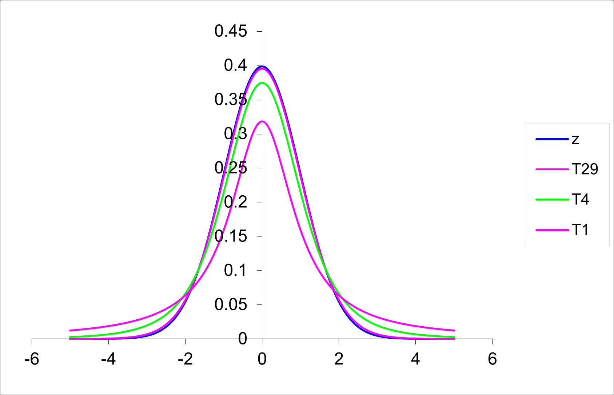
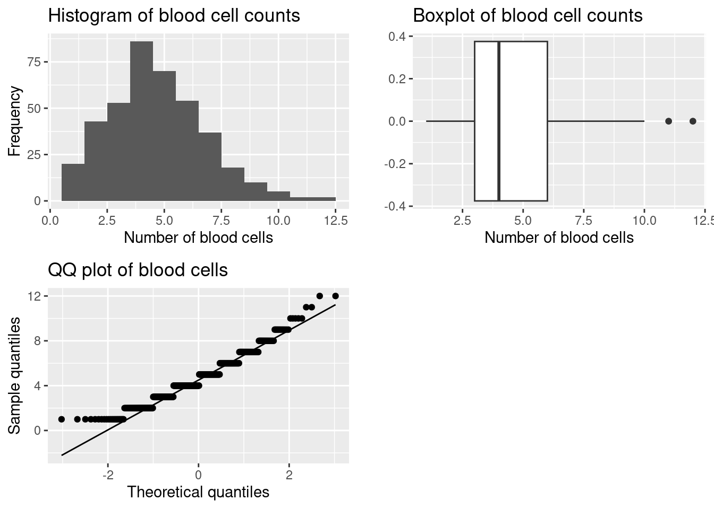
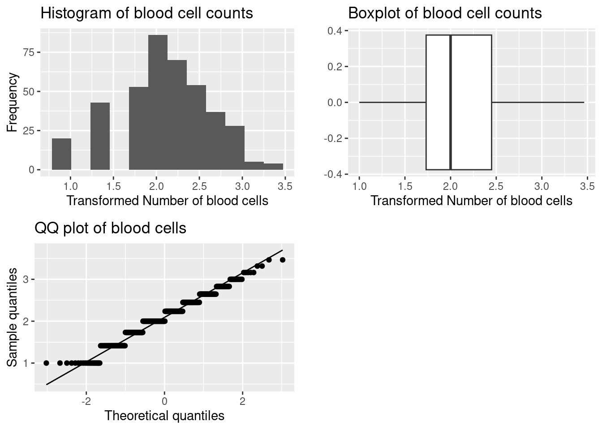
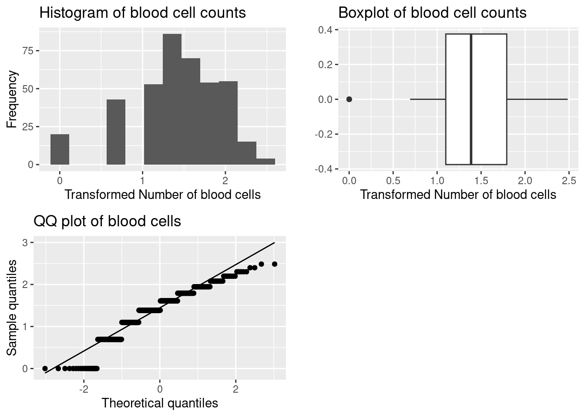
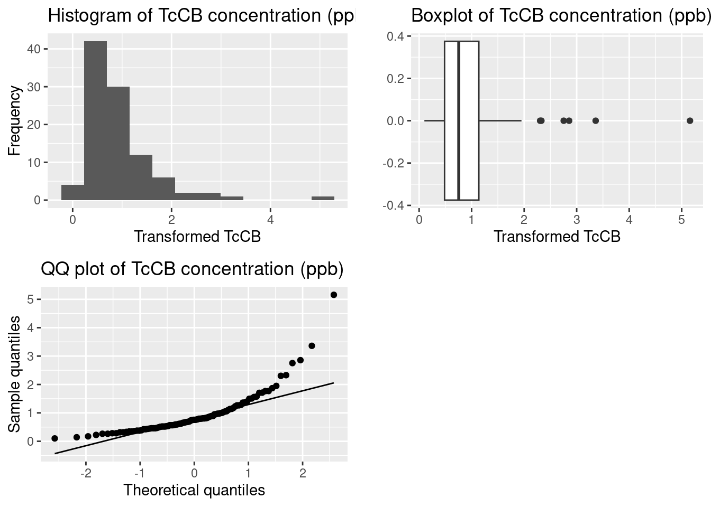
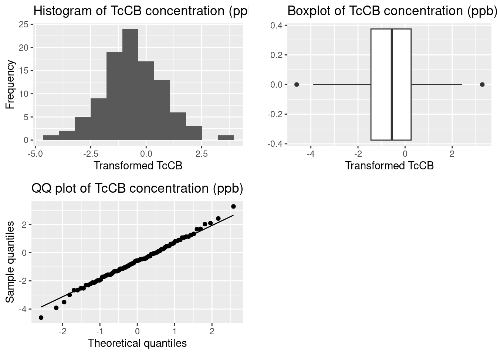

qnorm(0.025)[1] -1.959964Confidence intervals (CI) are also known as “confidence limits”. Most commonly we generate a confidence interval (CI) for \(\mu\) (the population mean) but you may also see CI’s for the population variance \(\sigma\), or for the population probability \(p\) in literature.
A confidence interval consists of two values (an upper and a lower limit). It is generally written as the two values separated by a comma within brackets e.g. (3.3, 4.1), with the lower value on the left, and the upper value on the right. We must specify a degree of likelihood or confidence that the population mean \(\mu\) is located in this interval. To be more confident that the interval includes \(\mu\), the width of the interval must be increased e.g. 99% CI. The most commonly chosen level or confidence is 95%, but you will also see 90% and 99% CI’s in literature.
(From Glover & Mitchell, 2002.) The sample mean \(\bar y\) is an unbiased estimator of the population mean \(\mu\). \(\bar y\)’s are not all the same due to sampling variability. Their scatter depends on both the variability of the y’s, measured by \(\sigma\), and the sample size \(n\). Recall that the standard error of the mean is \(\sqrt{\frac{\sigma^2}{n}}\) and we also know that the random variable \(\frac{\bar y -\mu}{\sqrt{\frac{\sigma^2}{n}}}\) is distributed as the standard normal or the Z distribution.
EXAMPLE
For the sampling distribution of this Z variable, consider what two values of capture the middle 95% of the distribution? That is, for \(P(a \le Z \le b) = 0.95\), what are a and b?
qnorm(0.025)[1] -1.959964qnorm(0.725)[1] 0.5977601So \(P(-1.960 \le Z \le 1.960) = 0.95\), or the values ± 1.960 capture the middle 95% of the Z distribution.
Therefore we capture the middle 95% of the \(\bar y\)’s if
\(P\left(-1.960 \leq \frac{\bar{X} - \mu}{\frac{\sigma}{\sqrt{n}}} \leq 1.960\right) = 0.95\)
\(\leftrightarrow P\left(-1.960 \frac{\sigma}{\sqrt{n}} \leq \bar{X} - \mu \leq 1.960 \frac{\sigma}{\sqrt{n}}\right) = 0.95\)
\(\leftrightarrow P\left(\bar{X} -1.960 \frac{\sigma}{\sqrt{n}} \leq \mu \leq \bar{X} +1.960 \frac{\sigma}{\sqrt{n}}\right) = 0.95\)
\(\leftrightarrow P\left(\bar{X} -1.960 \frac{\sigma}{\sqrt{n}} \leq \mu \leq \bar{X} +1.960 \frac{\sigma}{\sqrt{n}}\right) = 0.95\)
From the final equation above, we can say that the probability that the sample mean will differ by no more than 1.960 standard errors \(\sqrt{\frac{\sigma^2}{n}}\) from the population mean \(\mu\) is 0.95.
More commonly the equation for a CI is given as
\(\text{95 % CI} = \bar{y} \pm z_{0.025} \times s.e.\)
where \(z^{0.025}\) is a critical value from the standard normal distribution (also known as the z distribution). 2.5% of data lies to the right of \(z^{0.025}\). Equivalently, 97.5% of data lies to the left of \(z^{0.025}\). To find this value, you would look up a cumulative probability of 0.975 in the standard normal table or use the formula =NORMINV(0.975,0,1) to find it in Excel. As we have seen above in R we can use the function qnorm(0.975)
qnorm(0.975)[1] 1.959964For 90% or 99% confidence intervals, the only element of the CI formula that changes is the z critical value that is being used. So a \(\text{95 % CI} = \bar{y} \pm z_{0.05} \times s.e.\) and a \(\text{99 % CI} = \bar{y} \pm z_{0.01} \times s.e.\)
### Interpreting the Confidence Interval for \(\mu\)
\(\bar y\) is a random variable with a sampling distribution. Because there is an infinite number of values of \(\bar{y}\), there is an infinite number of intervals of the form \(\bar{y} \pm 1.96\frac{\sigma}{\sqrt{n}}\). The probability statement says that 95% of these intervals will actually include \(\mu\) between the limits. For any one interval, \(\bar{y} \pm 1.96\frac{\sigma}{\sqrt{n}}\), we say that we are 95% confident that \(\mu\) lies between these limits.
EXAMPLE
The following data shows the concentration of a toxic substance was measured in six ‘samples’ of effluent output. The readings were:
0.48 0.25 0.29 0.51 0.49 0.40
The mean for these six values is \(\bar y=0.403\) \(\mu g/L\). Let’s assume that the concentration of this toxic substance follows a normal distribution and that \(\sigma = 0.1\) \(\mu g/L\). These assumptions allow us to calculate a 95% z-based confidence interval:
\(\bar{y} \pm z^{0.025}\frac{\sigma}{\sqrt{n}}\)
where \(z^{0.025} = 1.96\) is the upper 2.5% point of the standard normal distribution.
So the 95% CI for the current example is
\(0.403 \pm 1.96 \times \sqrt{\frac{0.1}{6}} = 0.403 \pm 0.080 = (0.323, 0.483)\)
We can say that we are 95% confident that the (population) mean concentration is somewhere in the range 0.323 to 0.483 \(\mu g/L\), although the best single estimate is 0.403 \(\mu g/L\).
y <- c(0.48, 0.25, 0.29, 0.51, 0.49, 0.40)
n <- length(y)
mu <- mean(y)
sigma <- 0.1
se <- sigma/sqrt(n)
z <- qnorm(0.975)
ci <- mu + c(-1,1)*z*se
ci[1] 0.3233181 0.4833485There are very few times in a real world situation when you would know \(\sigma\) and not know \(\mu\), so a z-based CI is very rarely used in practice. The more likely real-world situation would be that we take a sample from a population with unknown shape, mean, and standard deviation. From this sample we calculate \(\bar y\) and \(s\). By the Central Limit Theorem, we assume \(\bar y\)’s sampling distribution is approximately normal. We can now use \(\frac{s}{\sqrt{n}}\), the sample standard error, as our estimate of \(\frac{\sigma}{\sqrt{n}}\), the population standard error. When \(\frac{s}{\sqrt{n}}\) replaces \(\frac{\sigma}{\sqrt{n}}\) in the formula \(\frac{\bar y - \mu }{\frac{\sigma}{\sqrt{n}}}\), we have \(\frac{\bar y - \mu }{\frac{s}{\sqrt{n}}}\).
While the distribution of \(\frac{\bar y - \mu }{\frac{\sigma}{\sqrt{n}}}\) is known to be the standard normal distribution or Z distribution, replacing \(\sigma\) with \(s\) will generate a different sampling distribution. This distribution is called the T distribution. (It is sometimes called the Student’s T distribution). A man named W.S. Gosset first published this sampling distribution in 1908.
The T-distribution has the following properties:
If you look at the “old school” t-tables, you will note that the T table is presented differently to the tables you have encountered before for the binomial, Poisson and normal distribution. Here the values in the body of the table are critical values from the T distribution rather than cumulative probabilities (as was the case for the tables for the other distributions). The same information is still available, just in a more restricted format.

The general formula for a CI for \(\mu\) when \(\sigma\) is not known is
\(\text{95 % CI} = \bar{y} \pm t^{\alpha/2}_{n-1} \times s.e.(\bar y)\)
Here \(\alpha\) is the level of significance (or the probability of being incorrect in our estimation that we are willing to bear). For a 95% confidence interval, the corresponding level of significance is 5% (usually expressed in decimal format as 0.05). Also \(n-1\) is the degrees of freedom. For example, the critical value \(t^{\alpha/2}_{n-1}\) (or more simply t^{0.025}_{24}) is equal to 2.064.
qt(0.025, 24)[1] -2.063899qt(0.975, 24)[1] 2.063899Note that s.e., s.e.(\(\bar y\)) and s.e.m. are all equivalent expressions for the standard error of the mean. You will see them used interchangeably among scientists and the literature they write. Remember that the s.e. in the more common case when \(\sigma\) is unknown is calculated as \(\frac{s}{\sqrt(n)}\).
If an experiment were to be repeated many times, on average, 95% of all 95% confidence intervals would include the true mean, \(\mu\).
The following graph shows 100 confidence intervals produced from computer simulated data. The simulated data are 100 studies, each containing n = 6 observations of a fictitious toxic substance concentration (\(\mu g/L\)) assumed to be \(N(0.3, 0.1^2)\).
For each computer generated “sample”, the sample mean \(\mu\) and standard deviation (s) are calculated, then the 95% confidence interval calculated \(\bar{y} \pm t^{\alpha/2}_{n-1} \times \sqrt{s^2/n}\) .
 Approximately 95% of these simulated samples have a confidence interval that includes the true value of 0.3 \(\mu g/L\). In the graph above, a confidence interval includes the true mean value of 0.3 if the vertical line (representing the width of the CI) crosses the horizontal line.
Approximately 95% of these simulated samples have a confidence interval that includes the true value of 0.3 \(\mu g/L\). In the graph above, a confidence interval includes the true mean value of 0.3 if the vertical line (representing the width of the CI) crosses the horizontal line.
However in practice, when we calculate a CI from a single sample of data, we do not know if it is a confidence that includes \(\mu\), but we are 95% confident that it does! 99% confidence intervals would be wider and more likely to include \(\mu\), so it seems more logical to opt for the widest confidence interval possible. However, as we will learn in the next Section, there are opposing errors that are introduced when we make \(\alpha\) small i.e. when we make the CI wide.
As you know, data are not always normally distributed. However, the most common statistical techniques assume normality of data. In situations where you wish to use one of these techniques (and the data are not normally distributed) a “transformation” is required.
The most common transformation in environmental modelling is the logarithm (to base 10 or base e). Other common transformations include the square root and arcsine (or angular) transformations.
The process of transformation is that each of the data values has the same mathematical function applied to them. For example,
Square root: \(y`=\sqrt{y}\) or \(y`=\sqrt{y+ \frac{1}{2}}\)
Logarithmic: \(y`=\log_e y\) or \(y`=\log_e (y+1)\)
Arcsine (angular) for a percentage \(p(0 <p < 100)\):
\(x = (180/\pi) \times \arcsin(\sqrt{p/100})\)
The log transformation is often used in growth studies involving a continuous variable such as length or weight. This transformation is also useful in ecological studies involving counts of individuals when the variance of the sample count data is larger than the mean. If the sample data contain the value zero, then a modification to the \(\log(x)\) transformation is the \(\log (x+1)\) transformation. This transformation eliminates the mathematical difficulty that the logarithm of 0 is undefined. The square root transformation is useful when the variance of the sample data is approximately equal to the sample mean. The arcsine transformation is appropriate for data which are expressed as proportions.
After the data has been transformed, all subsequent analyses take place on the transformed scale. Results may be back-transformed to original scale.
The following examples show how to select the optimum transformation of data.
Example 1: Number of blood cells observed in 400 areas on a microscope slide (haemocytometer) (Fisher, 1990 p56)
| Number of blood cells: | 0 | 1 | 2 | 3 | 4 | 5 | 6 | 7 | 8 | 9 | 10 | 11 |
|---|---|---|---|---|---|---|---|---|---|---|---|---|
| Frequency: | 0 | 20 | 43 | 53 | 86 | 70 | 54 | 37 | 18 | 10 | 5 | 2 |
Question: Can we assume this data follows a normal distribution?
#q: use ggplot to draw histogram, boxplot and qqnormal plot of the data
library(ggplot2)
library(gridExtra)
bcc_df <- read.csv("data/BloodCellCount.csv")
p1 <- ggplot(bcc_df, aes(BloodCellCount)) +
geom_histogram(bins = 12) +
labs(title="Histogram of blood cell counts", x="Number of blood cells", y="Frequency")
p2 <- ggplot(bcc_df, aes(BloodCellCount)) +
geom_boxplot() +
labs(title="Boxplot of blood cell counts", x="Number of blood cells", y="")
p3 <- ggplot(bcc_df, aes(sample=BloodCellCount)) +
stat_qq() +
stat_qq_line() +
labs(title="QQ plot of blood cells", x="Theoretical quantiles", y="Sample quantiles")
grid.arrange(p1, p2, p3, ncol=2)
library(moments)
skewness(bcc_df$BloodCellCount)[1] 0.529368kurtosis(bcc_df$BloodCellCount)[1] 3.292761shapiro.test(bcc_df$BloodCellCount)
Shapiro-Wilk normality test
data: bcc_df$BloodCellCount
W = 0.96042, p-value = 6.607e-09Observations:
Conclusion:
Question: Is there any transformation we can perform (that is fit a mathematical function to the data) where the data (on the transformed scale) will approximately follow a normal distribution?
A. Square Root Transformation
bcc_df$sqrt_BloodCellCount <- sqrt(bcc_df$BloodCellCount)
p1 <- ggplot(bcc_df, aes(sqrt_BloodCellCount)) +
geom_histogram(bins = 12) +
labs(title="Histogram of blood cell counts", x="Transformed Number of blood cells", y="Frequency")
p2 <- ggplot(bcc_df, aes(sqrt_BloodCellCount)) +
geom_boxplot() +
labs(title="Boxplot of blood cell counts", x="Transformed Number of blood cells", y="")
p3 <- ggplot(bcc_df, aes(sample=sqrt_BloodCellCount)) +
stat_qq() +
stat_qq_line() +
labs(title="QQ plot of blood cells", x="Theoretical quantiles", y="Sample quantiles")
grid.arrange(p1, p2, p3, ncol=2)
library(moments)
skewness(bcc_df$sqrt_BloodCellCount)[1] -0.1373212kurtosis(bcc_df$sqrt_BloodCellCount)[1] 2.854581shapiro.test(bcc_df$sqrt_BloodCellCount)
Shapiro-Wilk normality test
data: bcc_df$sqrt_BloodCellCount
W = 0.97117, p-value = 4.13e-07In spite of the fact that the Shapiro Wilks test shows this distribution is significantly different to normal the normal probability plot shows a sufficiently linear match and the histogram appears symmetric. The distribution is symmetric, transformation successful.The test is significant, but the Q-Q plot and histogram look good. The skewness and kurtosis values are close to zero.
Note: The Shapiro Wilks Test is very sensitive to large sample sizes, i.e. n > 50. In this case we use the Q-Q plot and histogram to assess normality.
A. Log Transformation
bcc_df$log_BloodCellCount <- log(bcc_df$BloodCellCount)
p1 <- ggplot(bcc_df, aes(log_BloodCellCount)) +
geom_histogram(bins = 12) +
labs(title="Histogram of blood cell counts", x="Transformed Number of blood cells", y="Frequency")
p2 <- ggplot(bcc_df, aes(log_BloodCellCount)) +
geom_boxplot() +
labs(title="Boxplot of blood cell counts", x="Transformed Number of blood cells", y="")
p3 <- ggplot(bcc_df, aes(sample=log_BloodCellCount)) +
stat_qq() +
stat_qq_line() +
labs(title="QQ plot of blood cells", x="Theoretical quantiles", y="Sample quantiles")
grid.arrange(p1, p2, p3, ncol=2)
library(moments)
skewness(bcc_df$log_BloodCellCount)[1] -0.8655114kurtosis(bcc_df$log_BloodCellCount)[1] 3.684001shapiro.test(bcc_df$log_BloodCellCount)
Shapiro-Wilk normality test
data: bcc_df$log_BloodCellCount
W = 0.92515, p-value = 3.025e-13Transformation is TOO STRONG - outlier(s) on left hand tail.
Example 2: Tetrachlorobenzene levels (TcCB, ppb) in 100 soil samples
Note: We have seen previously that the distribution of this data is HIGHLY POSITIVELY skewed. Data is stored in the file TcCB.csv.
A. Square root transformation
tccb_df <- read.csv("data/TcCB.csv")
tccb_df$sqrt_TcCB_ppb <- sqrt(tccb_df$TcCB_ppb)
p1 <- ggplot(tccb_df, aes(sqrt_TcCB_ppb)) +
geom_histogram(bins = 12) +
labs(title="Histogram of TcCB concentration (ppb)", x="Transformed TcCB", y="Frequency")
p2 <- ggplot(tccb_df, aes(sqrt_TcCB_ppb)) +
geom_boxplot() +
labs(title="Boxplot of TcCB concentration (ppb)", x="Transformed TcCB", y="")
p3 <- ggplot(tccb_df, aes(sample=sqrt_TcCB_ppb)) +
stat_qq() +
stat_qq_line() +
labs(title="QQ plot of TcCB concentration (ppb)", x="Theoretical quantiles", y="Sample quantiles")
grid.arrange(p1, p2, p3, ncol=2)
library(moments)
skewness(tccb_df$sqrt_TcCB_ppb)[1] 2.691321kurtosis(tccb_df$sqrt_TcCB_ppb)[1] 13.53575shapiro.test(tccb_df$sqrt_TcCB_ppb)
Shapiro-Wilk normality test
data: tccb_df$sqrt_TcCB_ppb
W = 0.76119, p-value = 1.869e-11Transformation not powerful enough - still Positively Skewed
A. Log transformation
tccb_df$log_TcCB_ppb <- log(tccb_df$TcCB_ppb)
p1 <- ggplot(tccb_df, aes(log_TcCB_ppb)) +
geom_histogram(bins = 12) +
labs(title="Histogram of TcCB concentration (ppb)", x="Transformed TcCB", y="Frequency")
p2 <- ggplot(tccb_df, aes(log_TcCB_ppb)) +
geom_boxplot() +
labs(title="Boxplot of TcCB concentration (ppb)", x="Transformed TcCB", y="")
p3 <- ggplot(tccb_df, aes(sample=log_TcCB_ppb)) +
stat_qq() +
stat_qq_line() +
labs(title="QQ plot of TcCB concentration (ppb)", x="Theoretical quantiles", y="Sample quantiles")
grid.arrange(p1, p2, p3, ncol=2)
library(moments)
skewness(tccb_df$log_TcCB_ppb)[1] -0.02521078kurtosis(tccb_df$log_TcCB_ppb)[1] 3.449717shapiro.test(tccb_df$log_TcCB_ppb)
Shapiro-Wilk normality test
data: tccb_df$log_TcCB_ppb
W = 0.99555, p-value = 0.9868Transformation successful - symmetric distribution
Continuing on from Example 2 where the transformation chosen is \(log_e\), we see that the normal probability plot is approximately linear and all test statistics (for the normality tests) are lower than their corresponding critical values, so we can assume the log-transformed data are normally distributed. (Or equivalently that the original data are log-normally distributed.)
On the log scale, the mean is –0.598. So the back-transformed mean is \(e^{–0.598} = 0.550\) ppb.
When a log-transformation is used, the back-transformed mean is known as the geometric mean (as opposed to the ordinary arithmetic mean). This measure is commonly used in describing environmental data, as in many cases data are highly positively skewed. Like the median, the geometric mean is less sensitive (or more robust) to these outlying values.
Note that the geometric mean is usually defined as
\(GM = \left( y_1 \times y_2 \times \ldots \times y_n \right)^{\frac{1}{n}} = \left( \prod_{i=1}^{n} y_i \right)^{\frac{1}{n}}\)
which is the same as \(\exp(\bar {y`})\) where \(\bar{y}^{\prime} = \frac{1}{n} \sum_{i=1}^{n} y_i^{\prime}\) and \(y_i^{\prime} = \log y_i\).
This can be shown for a simple case involving n = 3 observations:
\(\exp(\bar {y^{\prime}}) = \exp\left[\frac{1}{3}(y^{\prime}_1 + y^{\prime}_2 + y^{\prime}_3)\right]\)
\(\exp\left[\frac{1}{3}(\log y_1 + \log y_2 + \log y_3)\right]\) \(y^{\prime}_i = \log y_i\)
\(\left[\exp(\log y_1 + \log y_2 + \log y_3)\right]^{\frac{1}{3}}\) \(e^{ab}=(e^a)^b = (e^b)^a\)
\(\left[\exp(\log y_1) \times \exp(\log y_2) \times \exp(\log y_3)\right]^{\frac{1}{3}}\) \(e^{a+b} = e^a \times e^b\)
\(\left[y_1 \times y_2 \times y_3\right]^{\frac{1}{3}} = \sqrt[3]{y_1 \times y_2 \times y_3}\) \(e^{\log a} = a\) \(= GM\)
Just as the geometric mean is calculated as \(\exp(\bar {y^{\prime}})\), some books refer to \(exp(s^{\prime})\) as the geometric standard deviation, where \(s^{\prime}\) is the standard deviation of the \(y_i^{\prime} = \log y_i\). However, this is not a very useful concept, so it won’t be used here.
Since we have concluded log TcCB has a normal distribution, then TcCB has a lognormal distribution. If a variable log y = y has a normal N(,2) distribution, then the original variable has a lognormal distribution with parameters and 2, y ~ LN(,2). Note that and 2 are the parameters for the log variable. It can be shown (no proof here) the mean and variance for the lognormal LN(,2). distribution are Mean
Variance
We can illustrate these relationships by using the parameter estimates and from the log TcCB data to produce the following fitted normal distributions and lognormal distributions are obtained: